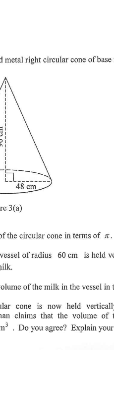

HKDSE Mathematics (Compulsory Part) · Paper 1
Mensuration — Volume of a Cone & a Hemisphere, Frustum of a Cone
Figure 3(a) shows a solid metal right circular cone of base radius \(48\text{ cm}\) and height \(96\text{ cm}\).
(a) Find the volume of the circular cone in terms of \(\pi\). 2 marks
(b) A hemispherical vessel of radius \(60\text{ cm}\) is held vertically on a horizontal surface. The vessel is fully filled with milk.
(i) Find the volume of the milk in the vessel in terms of \(\pi\). 2 marks
(ii) The circular cone is now held vertically in the vessel as shown in Figure 3(b). A craftsman claims that the volume of the milk remaining in the vessel is greater than \(0.3\text{ m}^3\). Do you agree? Explain your answer. 5 marks
